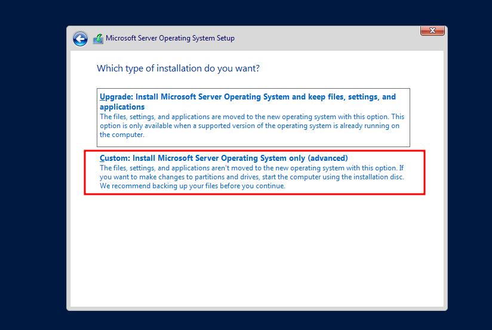

PowerShell Script
We will now do our beginning setup of making a "not so secure" DC. We will continue to use PowerShell scripts for ease of use.
Some of the commands below may be repeats, this is to ensure that the DC is setup and that everything takes.
PowerShell Terminal
Set-SmbClientConfiguration -RequireSecuritySignature 0 -EnableSecuritySignature 0 -Confirm -Force
mkdir C:\Common
echo "$password = ConvertTo-SecureString 'UberSecurePassword' -AsPlainText -Force`n$credential = New-Object System.Management.Automation.PSCredential ('administrator', $password)`nInvoke-Command -ComputerName . -Credential $credential -ScriptBlock { Restart-Service -Name 'DNS Server' }" > C:\Common\DNSrestart.ps1
New-SmbShare -Name Common -Path C:\Common -FullAccess Everyone
Enable-LocalUser -Name "Guest"
$acl = Get-Acl C:\Common
$AccessRule = New-Object System.Security.AccessControl.FileSystemAccessRule("Guest","FullControl","Allow")
$acl.SetAccessRule($AccessRule)
$acl | Set-Acl C:\Common
Set-Itemproperty -path 'HKLM:\SYSTEM\CurrentControlSet\Control\Lsa' -Name 'EveryoneIncludesAnonymous' -value '1'
New-ItemProperty -Path 'HKLM:\SYSTEM\CurrentControlSet\Services\LanmanServer\Parameters' -name "NullSessionShares" -PropertyType MultiString -value "C:\Common"
# Import Active Directory module (Ensure RSAT tools are installed)
Import-Module ActiveDirectory
# Create the new domain user 'Alice.Wonderland' with the password 'P@ssw0rd!'
New-ADUser -SamAccountName "Alice.Wonderland" `
-UserPrincipalName "Alice.Wonderland@domain.com" `
-Name "Alice Wonderland" `
-GivenName "Alice" `
-Surname "Wonderland" `
-DisplayName "Alice Wonderland" `
-PasswordNeverExpires $true `
-AccountPassword (ConvertTo-SecureString "P@ssw0rd!" -AsPlainText -Force) `
-Enabled $true `
-PassThru
# Set Kerberos Pre-Authentication to Disabled for the user
Set-ADUser -Identity "Alice.Wonderland" -KerberosPreAuthenticationDisabled $true
Write-Host "User Alice.Wonderland created and Kerberos pre-authentication disabled."
# Import Active Directory module (Ensure RSAT tools are installed)
Import-Module ActiveDirectory
# Define the domain controller account
$domainController = "DC01" # Replace with the name of your domain controller
# Create a service account for the mssql service
$serviceAccountName = "mssql_service"
$servicePassword = "Password123!@#"
# Create the service account in Active Directory
New-ADUser -SamAccountName $serviceAccountName `
-UserPrincipalName "$serviceAccountName@maraudersec.local" `
-Name "mssql service account" `
-GivenName "mssql" `
-Surname "service" `
-DisplayName "mssql service" `
-PasswordNeverExpires $true `
-AccountPassword (ConvertTo-SecureString $servicePassword -AsPlainText -Force) `
-Enabled $true `
-PassThru
# Set SPN for the mssql service
$spn = "mssql/$domainController"
# Set the CIFS SPN for the service account
Set-ADUser -Identity $serviceAccountName -ServicePrincipalNames $spn
# Set the CIFS service principal name (ensure the domain controller's CIFS SPN is added)
Set-ADUser -Identity $serviceAccountName -ServicePrincipalNames "cifs/$domainController"
Write-Host "Service Principal Name (SPN) for mssql service has been set with CIFS permissions."
# Allow all inbound and outbound connections by configuring the firewall
Set-NetFirewallProfile -Profile Domain,Public,Private -Enabled True -DefaultInboundAction Allow -DefaultOutboundAction Allow
# Disable Windows Defender real-time monitoring (antivirus protection)
Set-MpPreference -DisableRealtimeMonitoring $true
# Optionally, you can also disable Windows Defender completely, if needed
# Set-MpPreference -DisableAntiSpyware $true
netsh advfirewall set allprofiles state off
Write-Host "Firewall configured to allow all connections and real-time monitoring disabled."
$Dcname = Get-ADDomain | Select-Object -ExpandProperty DistinguishedName
$Adsi = 'LDAP://CN=Directory Service,CN=Windows NT,CN=Services,CN=Configuration,' + $Dcname
$AnonADSI = [ADSI]$Adsi
$AnonADSI.Put("dSHeuristics","0000002")
$AnonADSI.SetInfo()
$ADSI = [ADSI]('LDAP://CN=Users,' + $Dcname)
$Anon = New-Object System.Security.Principal.NTAccount("ANONYMOUS LOGON")
$SID = $Anon.Translate([System.Security.Principal.SecurityIdentifier])
$adRights = [System.DirectoryServices.ActiveDirectoryRights] "GenericRead"
$type = [System.Security.AccessControl.AccessControlType] "Allow"
$inheritanceType = [System.DirectoryServices.ActiveDirectorySecurityInheritance] "All"
$ace = New-Object System.DirectoryServices.ActiveDirectoryAccessRule $SID,$adRights,$type,$inheritanceType
$ADSI.PSBase.ObjectSecurity.ModifyAccessRule([System.Security.AccessControl.AccessControlModification]::Add,$ace,[ref]$false)
$ADSI.PSBase.CommitChanges()
# Allow anonymous binding to LDAP (null access)
Set-ADDomainController -Identity "DC01" -LdapBindAnonymous $true
# Modify LDAP Server to allow null access for anonymous users
$domainController = "DC01.maraudersec.local"
$nullAccess = "LDAP://$domainController"
$ldapConnection = New-Object DirectoryServices.DirectorySearcher
$ldapConnection.SearchRoot = New-Object DirectoryServices.DirectorySearcher
$ldapConnection.Filter = "(objectClass=*)"
$ldapConnection.Properties.PropertyNames | ForEach-Object {
Write-Host "Access granted for: $_"
}
# Set up a firewall rule to allow LDAP on port 389 for null access
New-NetFirewallRule -DisplayName "Allow LDAP Null Access" -Direction Inbound -Protocol TCP -LocalPort 389 -Action Allow
New-NetFirewallRule -DisplayName "Allow LDAP Null Access" -Direction Outbound -Protocol TCP -LocalPort 389 -Action Allow
# Import the Active Directory module (if not already imported)
Import-Module ActiveDirectory
# Disable password complexity
Set-ADDefaultDomainPasswordPolicy -Identity "maraudersec.local" -ComplexityEnabled $false
# Set the minimum password length to 6 characters (you can change this value)
Set-ADDefaultDomainPasswordPolicy -Identity "maraudersec.local" -MinPasswordLength 6
# Set the maximum password age to 90 days (you can change this value)
Set-ADDefaultDomainPasswordPolicy -Identity "maraudersec.local" -MaxPasswordAge (New-TimeSpan -Days 90)
# Set the minimum password age to 0 days (users can change password immediately)
Set-ADDefaultDomainPasswordPolicy -Identity "maraudersec.local" -MinPasswordAge (New-TimeSpan -Days 0)
# Set the number of passwords to remember (set to 0 to disable history requirement)
Set-ADDefaultDomainPasswordPolicy -Identity "maraudersec.local" -PasswordHistoryCount 0
# Disable account lockout policy (if desired, not recommended for production environments)
Set-ADDefaultDomainPasswordPolicy -Identity "maraudersec.local" -LockoutThreshold 0
Write-Host "Password policy updated successfully!"
Write-Host "LDAP null access allowed and firewall configured."
# List of passwords to choose from
# Set the password policy to allow simple passwords
# Set the password policy to allow simple passwords
$Domain = "maraudersec.local"
# Set the minimum password length and disable complexity requirements
Set-ADDomain -Identity $Domain -MinPasswordLength 4
Set-ADDefaultDomainPasswordPolicy -ComplexityEnabled $false
# List of 10 usernames and passwords, with two users having their password in the description and set to change password
$users = @(
@{Username="john.doe"; Password="1234"; Description="Password: 1234"},
@{Username="jane.smith"; Password="password"; Description="Password: password"},
@{Username="michael.brown"; Password="qwerty"; Description="Password: qwerty"},
@{Username="susan.johnson"; Password="iloveyou"; Description="Password: iloveyou"},
@{Username="robert.miller"; Password="12345"; Description="Password: 12345"},
@{Username="patricia.taylor"; Password="letmein"; Description="Password: letmein"},
@{Username="james.moore"; Password="monkey"; Description="Password: monkey"},
@{Username="mary.jackson"; Password="123456"; Description="Password: 123456"},
@{Username="david.white"; Password="welcome"; Description="Password: welcome"},
@{Username="linda.harris"; Password="football"; Description="Password: football"}
)
# Create each user
foreach ($user in $users) {
# Check if the user already exists
if (-not (Get-ADUser -Filter {SamAccountName -eq $user.Username})) {
# Create the user with the specified password
$newUser = New-ADUser -SamAccountName $user.Username `
-UserPrincipalName "$($user.Username)@$Domain" `
-Name $user.Username `
-GivenName ($user.Username.Split(".")[0]) `
-Surname ($user.Username.Split(".")[1]) `
-AccountPassword (ConvertTo-SecureString -AsPlainText $user.Password -Force) `
-Enabled $true `
-PassThru `
-ChangePasswordAtLogon $false `
-Description $user.Description
# Get the user's DistinguishedName or SAMAccountName for future commands
$userIdentity = $newUser.SamAccountName
# If this user has a password in the description, make them vulnerable to password change
if ($user.Description -match "Password:") {
Set-ADUser -Identity $userIdentity -ChangePasswordAtLogon $true
}
Write-Host "User $($user.Username) created with password $($user.Password) and description '$($user.Description)'"
} else {
Write-Host "User $($user.Username) already exists. Skipping creation."
}
}
Once finished the DC will reboot and you will have a domain controller setup.
Sometimes PowerShell will seem like it has froze, hit enter within the window and that will "wake it up".
Once finished, teh machine will reboot and we will see this logon screen. We now know it is part of the MarauderSec domain, or whichever domain you picked.
